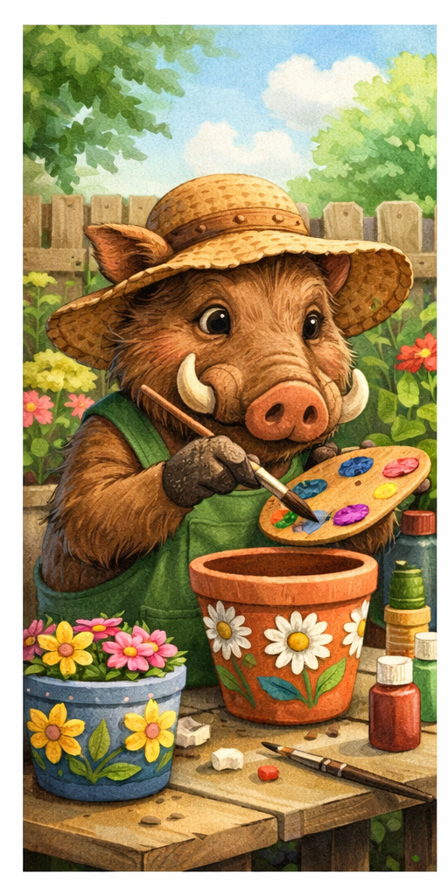
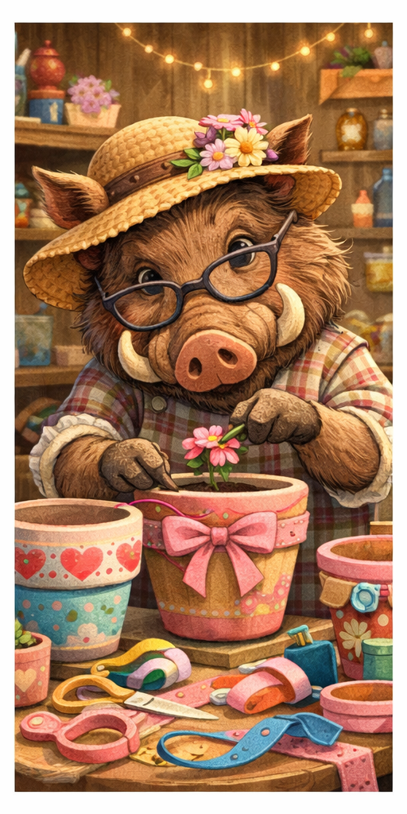
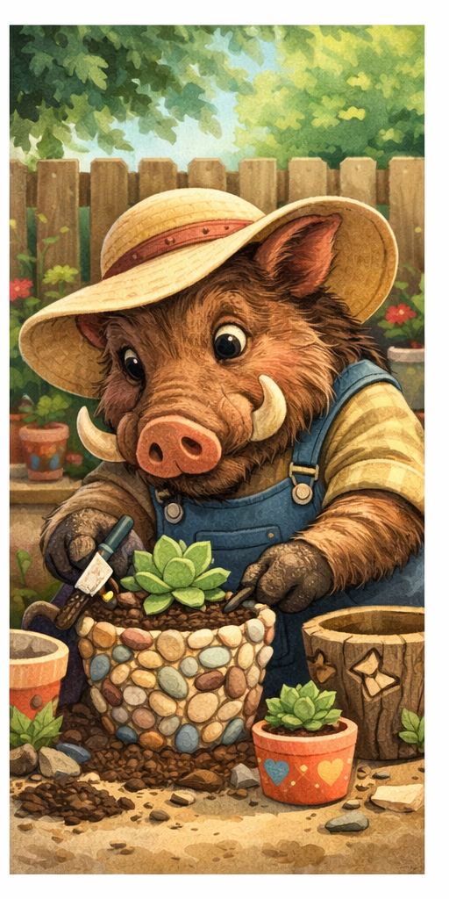

Floral Garden Artist
This design shows a cheerful warthog decorating a clay flower pot with hand-painted flowers while sitting outside in a sunny garden.
This gallery features three playful warthog-themed flower pot decorating designs, each with its own creative style and setting.

This design shows a cheerful warthog decorating a clay flower pot with hand-painted flowers while sitting outside in a sunny garden.

This design features a stylish warthog crafting a colorful flower pot indoors, using ribbons, flowers, and soft pastel decorations for a charming look.

This design shows a warthog building a textured flower pot with stones and succulents, creating a rustic and natural decorative style.